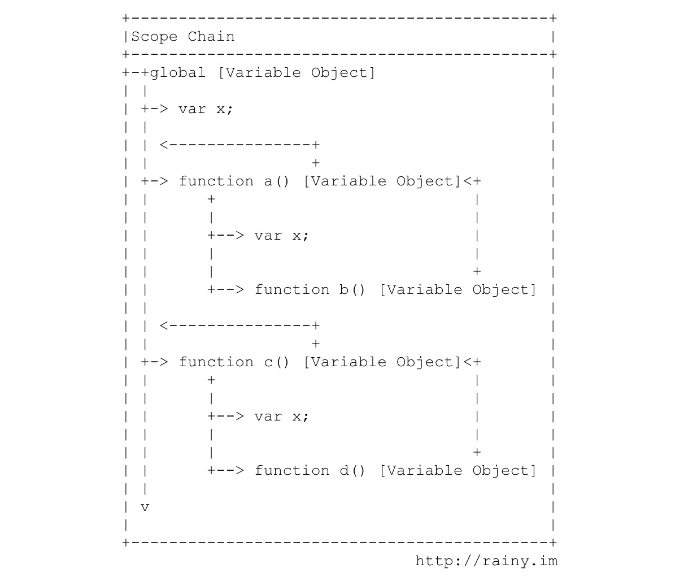

本文尝试阐述 JavaScript 中的上下文与作用域背后的机制，主要涉及到执行上下文（execution context） 、作用域链（scope chain）、闭包（closure）、this 等概念。
执行上下文（简称上下文）决定了 JavaScript 执行过程中可以获取哪些变量、函数、数据，一段程序可能被分割成许多不同的上下文，每一个上下文都会绑定一个变量对象（variable object），它就像一个容器，用来存储当前上下文中所有已定义或可获取的变量、函数等。位于最顶端或最外层的上下文称为全局上下文（gobal context），全局上下取决于执行环境，如 Node 中的 global 和 Browser 中的 window ：
需要注意的是，上下文与作用域（scope）是不同的概念。JavaScript 本身是单线程的，每当有 function 被执行时，就会产生一个新的上下文，这以上下文会被压入 JavaScript 的上下文堆栈（context stack）中，function 执行结束后则被弹出，因此 JavaScript 解释器总是在栈顶上下文中执行。在生成新的上下文时，首先会绑定该上下文的变量对象，其中包括 arguments 和该函数中定义的变量；之后会创建属于该上下文的作用域链（scope chain），最后将 this 赋予这一 function 所属的 Object ，这一过程可以通过下图表示：
上文提到 this 被赋予 function 所属的 Object ，具体来说，当 function 是定义在 global 对象中时， this 指向 global ； 当 function 作为 Object 的方法时， this 指向该 Object ：
1 2 3 4 5 6 7 8 9 10 11 12 13 14 15 16 | var x = 1;var f = function() { console.log(this.x);}f(); // -> 1var ff = function() { this.x = 2; console.log(this.x);}ff(); // -> 2x // -> 2var o = { x: "o's x", f: f};o.f(); // "o's x" |
上文提到，在 function 被执行时生成新的上下文时会先绑定当前上下文的变量对象，再创建作用域链。我们知道 function 的定义是可以嵌套在其他 function 所创建的上下文中，也可以并列地定义在同一个上下文中（如 global）。作用域链实际上就是自上而下地将所有嵌套定义的上下文所绑定的变量对象串接到一起，使嵌套的 function 可以 “继承” 上层上下文的变量，而并列的 function 之间互不干扰：

1 2 3 4 5 6 7 8 9 10 11 12 13 14 15 16 17 18 19 20 | var x = 'global';function a() { var x = "a's x"; function b() { var y = "b's y"; console.log(x); }; b();}function c() { var x = "c's x"; function d() { console.log(y); }; d();}a(); // -> "a's x"c(); // -> ReferenceError: y is not definedx // -> "global"y // -> ReferenceError: y is not defined |
如果理解了上文中提到的上下文作用域链的机制，再来看闭包的概念就很清楚了。每个 function 在调用时会创建新的上下文及作用域链，而作用域链就是将外层（上层）上下文所绑定的变量对象逐一串连起来，使的当前 function 可以获取外层上下文的变量、数据等。如果我们在 function 中定义新的 function ，同时将内层 function 作为返回值，那么内层 function 所包含的作用域链将会一起返回，即使内层 function 在其他上下文中执行，其内部的作用域链仍然保持着原有的数据，而当前的上下文可能无法获取原先外层 function 中的数据，使得 function 内部作用域链被保护起来，从而形成“闭包”。看下面的例子：
1 2 3 4 5 6 7 8 9 10 11 12 13 14 15 16 17 | var x = 100;var inc = function() { var x = 0; return function() { console.log(x++); };};var inc1 = inc();var inc2 = inc();inc1(); // -> 0inc1(); // -> 1inc2(); // -> 0inc1(); // -> 2inc2(); // -> 1x; // -> 100 |
执行过程如下图所示， inc 内部返回匿名的 function 在创建时生成的作用域链包括了 inc 中的 x，即使后来赋值给 incl 和 inc2 之后，直接在 global context 下调用，他们的作用域链仍然是由定义中所处的上下文环境决定，而且由于 x 是在 function inc 中定义的，无法被外层的 global context 所改变，从而实现了闭包的效果：
我们已经反复提到执行上线文和作用域实际上是通过 function 创建、分割的，而 function 中的 this 与作用域链不同，它是由执行该 function 时当前所处的 Object 环境所决定的，这也是 this 最容易被混淆用错的一点。
一般情况下的例子如下：
1 2 3 4 5 6 7 8 9 10 | var name = "global";var oo = { name: "oo", getNameFunc: function() { return function() { return this.name; }; }}oo.getNameFunc()(); // -> "global" |
此时闭包含被 return 后调用相当于
1 2 | var getName = oo.getNameFunc();getName(); // -> "global" |
换一个更明显的例子：
1 2 3 4 5 | var ooo = { name: "ooo", getName: oo.getNameFunc() // 此时闭包函数的 this 被绑定到新的 Object};ooo.getName(); // -> "ooo" |
当然，有时候为了避免闭包中的 this 在执行时被替换，可以采取下面的方法：
1 2 3 4 5 6 7 8 9 10 11 | var name = "global";var oooo = { name: "ox4", getNameFunc: function() { var self = this; return function() { return self.name; }; }};oooo.getNameFunc()(); // -> "ox4" |
或者是在调用时强行定义执行的 Object：
1 2 3 4 5 6 7 8 9 10 11 | var name = "global";var oo = { name: "oo", getNameFunc: function() { return function() { return this.name; }; }}oo.getNameFunc()(); // -> "global"oo.getNameFunc().bind(oo)(); // -> "oo" |
JavaScript 是一门很有趣的语言，由于它的很多特性是针对于 HTML 中 DOM 的操作，因而显得随意而略失严谨，但随着前段不断的繁荣发展和 Node 的兴起，JavaScript 已经不再是 “toy language” 或是 jQuery 时代的 “CSS 扩展”，本文提到的这些概念无论是对新手还是从传统 Web 开发中过度过来的 JavaScript 开发人员来说，都很容易被混淆误解，希望本文可以有所帮助。
参考链接：